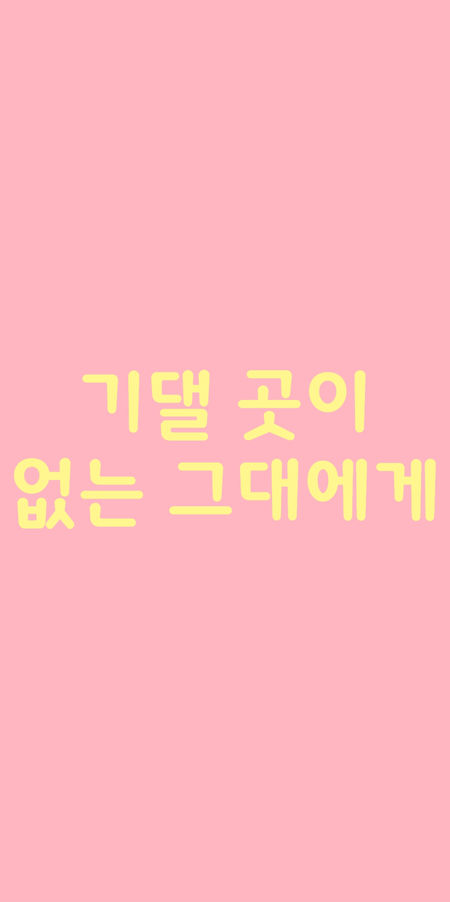
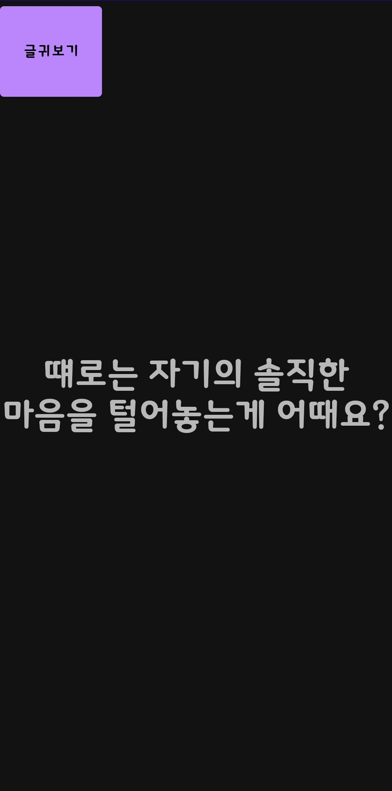
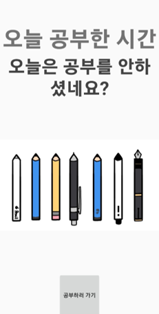
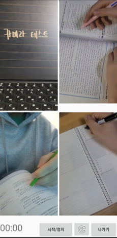
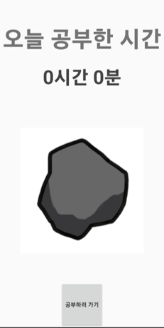
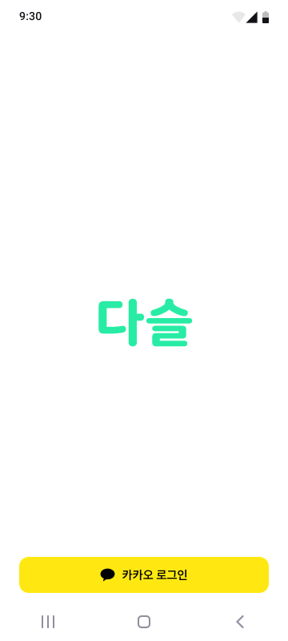
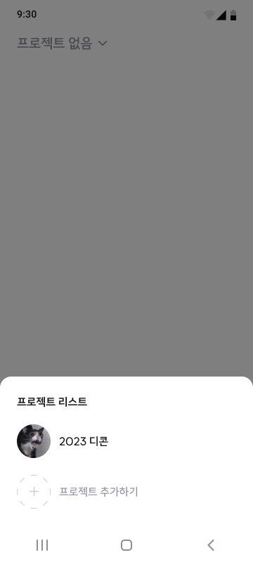
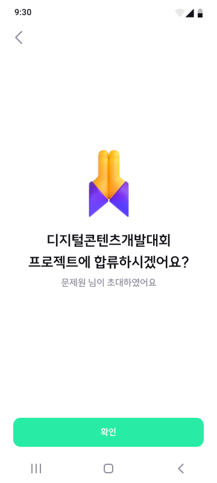
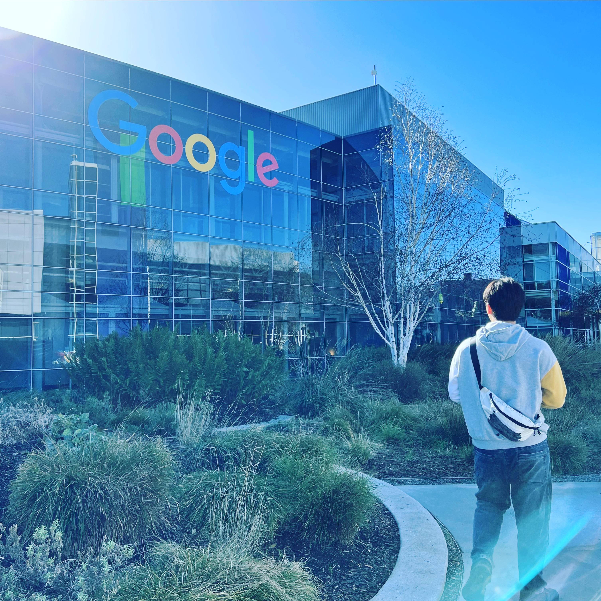

문제원입니다
세상을 바꾸려한 안드로이드 개발자의 작은 발걸음 구경하실래요?
기댈곳이 없는 그대에게 

안드로이드 스튜디오를 처음 입문하고 만든 첫번째 앱으로 중학교 3학년때 사춘기 및 학업으로 인해 혼란스럽고 힘들었던 저의 경험을 토대로 제작한 앱입니다.
어떻게 해야 거짓 없이 진심어린 위로를 할 수 있을까 고민하여 선정된 글귀들로 이루어져 있습니다
Growing Pencil by Study 
코로나 시대에 맞춰 유행하던 캠스터디를 오프라인 방식으로 구현하여 참여자, 장소 제약없이 혼자 캠스터디를 즐길 수 있도록 제작한 앱입니다
텀대서 


지구온난화가 심각해지고 있는 현재 1회용품 뿐만 아니라 1회용품을 대체하고자 하는 다회용품의 과잉 생산으로도 지구온난화가 심각해지고 있다는 것을 알게되었습니다
그래서 저희는 대표적인 다회용품 중 하나인 텀블러를 대여해주는 서비스를 개발하여 카페에 배치 후 1회용품의 사용량과 더불어 다회용품 또한 대여방식으로 재사용되면서
생산으로 인한 환경오염을 막고자 하였습니다


다슬
조별과제라는 말을 들으면 가장 먼저 생각나는게 무임승차, 탈주, 빌런 등등의 부정적인 단어입니다
이러한 조별과제에서 팀원의 비협조적인 행동으로 인한 갈등을 해결하기 위해 제작되었습니다
여긴 아직 세상에 보여주기 일러요
페이지 남는 김에 제 소개 좀 할게요

문제원
선린인터넷고등학교 소프트웨어과
App:ple Pi 14th


©dlfjstizlzl